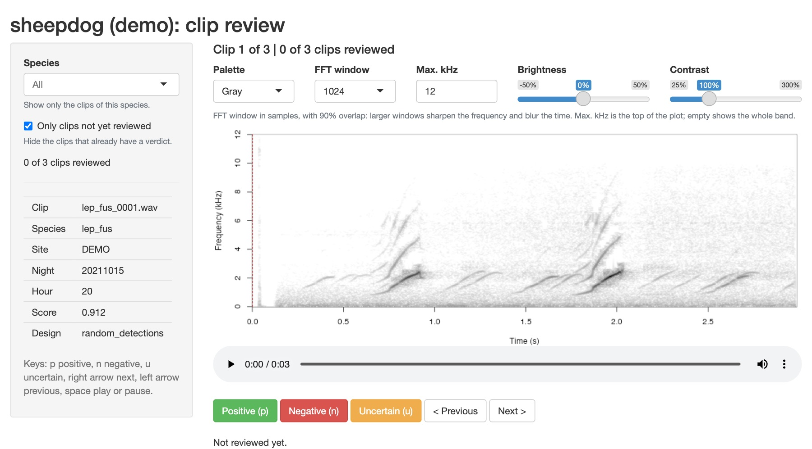

Sampling, reviewing and exporting in the sheepdog app
Source:vignettes/articles/review-app.Rmd
review-app.RmdThe manual review of stage 1 can be done in the BirdNET GUI (Reviewing clips in the BirdNET GUI) or in a small app that comes with sheepdog. The app can also draw and cut the clips and write the occupancy export, so that a validation round runs from the selection tables to the tables of the occupancy model without leaving it. In the Review tab, the app shows one clip at a time, with its spectrogram, a player and the data of the clip (site, night, hour, score and sampling design), and writes each verdict to a CSV file as soon as the reviewer clicks. No clip is moved between folders, and an interrupted session loses nothing.
The app runs on the reviewer’s computer, in the browser, and reads the clips from disk; nothing is uploaded. It needs the packages ‘shiny’ and ‘av’:
install.packages(c("shiny", "av"))Opening the app
For a whole validation round, give run_app() the folder
of the BirdNET selection tables and the folder of the round. The app
opens on the Sampling tab, followed by the Review and Export tabs:
library(sheepdog)
run_app(selection_dir = "N:/Arara", output_dir = "validation",
recordings = "recordings.csv", reviewer = "liliana",
max_freq = 8, classifier = "FrogNet v2")recordings, the table of every recording
(site, source_audio), is needed by the
"random_recordings" design and keeps, in the export, the
occasions without detections. Everything the app writes goes to
output_dir: clip_manifest.csv,
extraction_info.csv, clips/,
verdicts.csv and the export in occupancy/.
To review clips already cut, run_app() takes the clip
manifest and the folder of cut clips, with one subfolder per species, as
written by extract_validation_clips() or
cut_clips():
run_app("validation/clip_manifest.csv", "validation/clips",
reviewer = "liliana", max_freq = 8)and opens only the Review tab.
The verdicts go to verdicts.csv, next to the manifest,
unless verdicts_file says otherwise. The name in
reviewer is written with each verdict.
max_freq limits the spectrogram to the band of the calls,
in kHz (8 kHz covers most anuran calls); by default it shows the whole
band of the recording.

Drawing and cutting the clips
The Sampling tab is a form for the sampling design of
select_clips() (vignette("sampling-designs")
explains each choice): the mode ("top",
"random_detections" or "random_recordings"),
the occasion, the threshold of the occupancy analysis,
n_top, the strata of "random_detections", a
total per site or a maximum per site and species, the minimum score,
filters by site, species and hour, the seed, and the remapping of the
audio paths when the recordings moved since BirdNET read them.
Draw runs select_clips() without touching the
audio and shows the number of clips per site and species and the
inclusion probability of the clips of each species (minimum, median and
maximum), which the estimates of precision use as weights. Messages and
warnings of select_clips() are shown above the tables; with
"top", the app also reminds that those clips serve
retraining and calibration but do not estimate the false-positive
rate.
Cut clips cuts the drawn clips with cut_clips()
and writes clip_manifest.csv,
extraction_info.csv (the provenance of the round, with
every argument of the draw) and clips/, as
extract_validation_clips() does, without the zip packages.
With Simulate, nothing is cut and the table tells, per species,
whether each recording was found. The new clips go straight to the
Review tab. The app does not write over an existing
clip_manifest.csv unless Replace is ticked, since
the verdicts already given refer to its clips.
Reviewing
On the left, the species filter and the option Only clips not yet reviewed choose the clips in the queue, and a counter shows how many have been reviewed. On the right, the spectrogram (time in seconds, frequency in kHz, louder sounds darker), the player, which starts each clip on its own, and the buttons:
| Button | Key | Verdict |
|---|---|---|
| Positive | p |
the species is heard in the clip |
| Negative | n |
it is not |
| Uncertain | u |
the reviewer cannot tell |
| Next, Previous | right arrow or space, left arrow | none: moves through the queue |
After a verdict, the app moves to the next clip. A clip can be
reviewed again by going back to it (untick Only clips not yet
reviewed to see every clip); the last verdict counts. Closing the
browser tab and calling run_app() again resumes where the
review stopped.
"uncertain" verdicts are kept in the table but, like the
"disagreement" of consensus_verdicts(), left
out of precision, thresholds and calibration, which use only positive
and negative verdicts. They mark clips worth a second listen.
From the verdicts to the validation table
app_verdicts() joins the verdicts to the manifest and
returns the same table as classify_review(), the content of
validation_by_clip.csv. From there, stage 1 goes on as
after a review in the BirdNET GUI:
validation <- app_verdicts("validation/clip_manifest.csv",
"validation/verdicts.csv",
clips_dir = "validation/clips",
reviewer = "liliana")
readr::write_csv(validation, "validation/validation_by_clip.csv")
precision_by_bin(validation)
suggest_thresholds(validation)clips_dir fills reviewed_path, which
build_training_set() needs to copy the clips
(vignette("retraining")).
Several reviewers
With assign_reviewers(), each reviewer opens the app
with their own name, and the queue shows only their clips, including
those shared with a second reviewer. There is no need for
split_by_reviewer(): every reviewer reads the same
clips folder, on a shared drive or a copy of it.
manifest <- assign_reviewers(readr::read_csv("validation/clip_manifest.csv"),
reviewers = c("larissa", "liliana"),
overlap = 0.1)
readr::write_csv(manifest, "validation/clip_manifest.csv")
# each reviewer, on their own computer
run_app("validation/clip_manifest.csv", "validation/clips",
verdicts_file = "validation/verdicts_larissa.csv",
reviewer = "larissa")The reviewers can write to one shared verdicts.csv or
keep one file each. With one file each, stack them before reading:
verdicts <- list.files("validation", "^verdicts_.*\\.csv$",
full.names = TRUE) |>
lapply(readr::read_csv, col_types = readr::cols(.default = "c")) |>
dplyr::bind_rows()
readr::write_csv(verdicts, "validation/verdicts.csv")With reviewer = NULL, app_verdicts() keeps
every reviewer’s verdicts, one row per clip and reviewer, ready for the
agreement and the consensus:
all_reviews <- app_verdicts("validation/clip_manifest.csv",
"validation/verdicts.csv",
clips_dir = "validation/clips") |>
dplyr::filter(!is.na(reviewer))
reviewer_agreement(all_reviews)
validation <- consensus_verdicts(all_reviews)Exporting for the occupancy model
The Export tab calls export_occupancy_data() with the
detections of selection_dir, recordings and
the verdicts of the Review tab. When a clip has verdicts from several
reviewers, they are combined by consensus_verdicts(); clips
not yet reviewed are left out. Choose the occasion used in the draw
("file" or "minute"), the minimum score and
the folder of the export (validation/occupancy by default).
After the export, the app shows the schema version and the number of
rows of each table. The score calibration is not in the app yet: for the
calibrated tables, call export_occupancy_data() with
fit (vignette("calibration")).